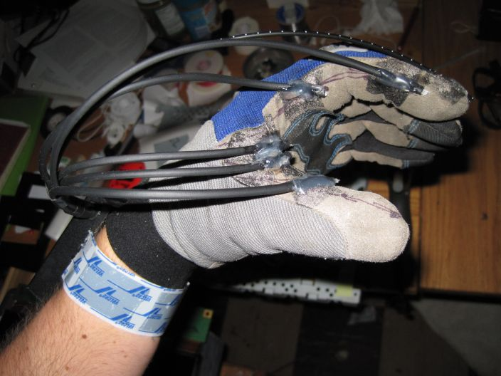
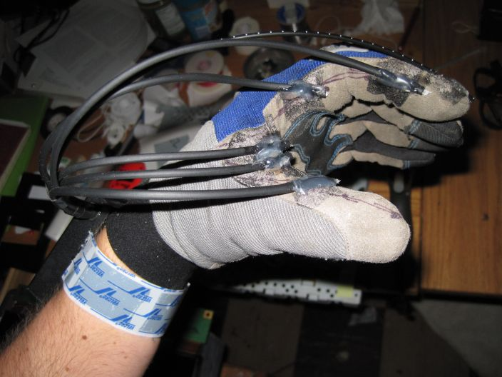
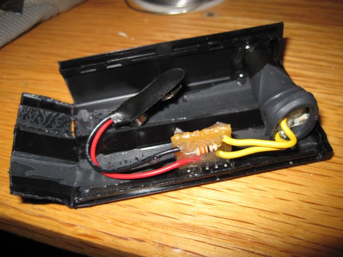
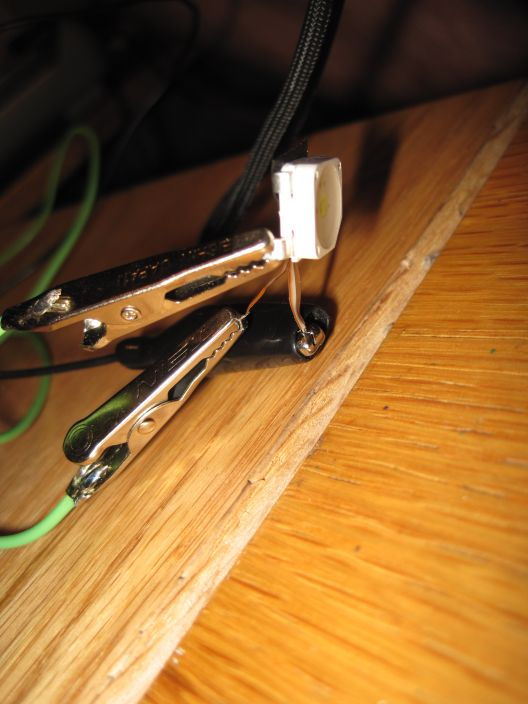

Fiberoptic Light Glove
I made a fiberoptic light glove. The motivation for this build came from the idea of a friend, and from a quick search of the internet for similar existing devices.
Only one other light glove is currently produced as a product. This glove has LEDs placed at the webs of the fingers. I wanted to make a glove that produced light from many more points to provide a more even illumination, but that was also flexible enough to feel like a normal glove. The solution: optical fiber cables coupled with a super bright LED, battery, and circuit in a box attached to the wrist. The light glove works quite well. I can use it hands free in complete darkness to navigate or in dark corners to assemble things.
The light source is a 1 Watt high power SMD LED from SunLED. The fiberoptic cables terminate in a bundle against the surface of the LED so that nearly all of the light is directed parallelly along them. The sheathed cables split off to locations along the curve between the thumb and forefinger. Ideally, the cables would be woven directly into the fabric of the glove, and the 9V battery would be replaced by thin lithium ion cells attached flat to the back of the palm.
I had concerns that the LED and dissipating resistor would get too hot, so I scavengened a thermistor from somewhere and used it to measure the thermal response of the components.
 

